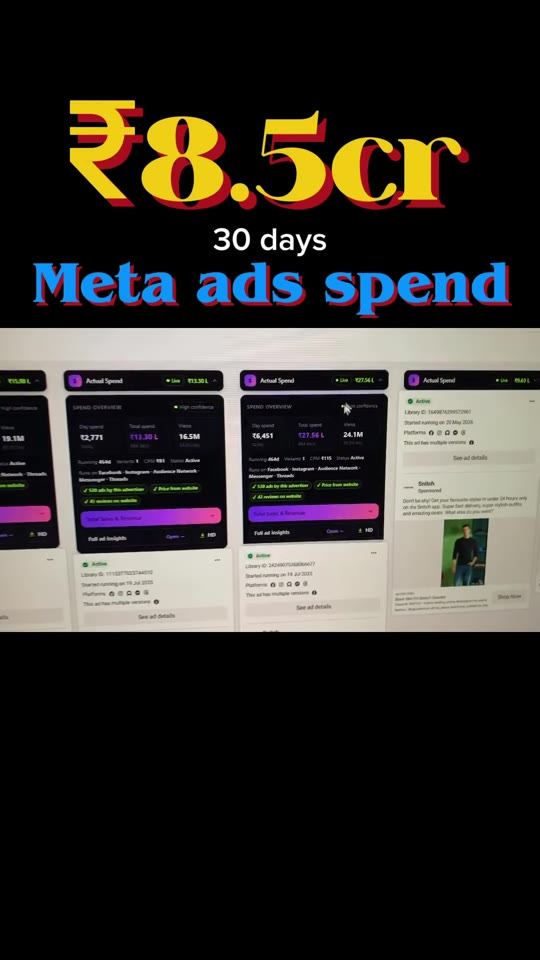
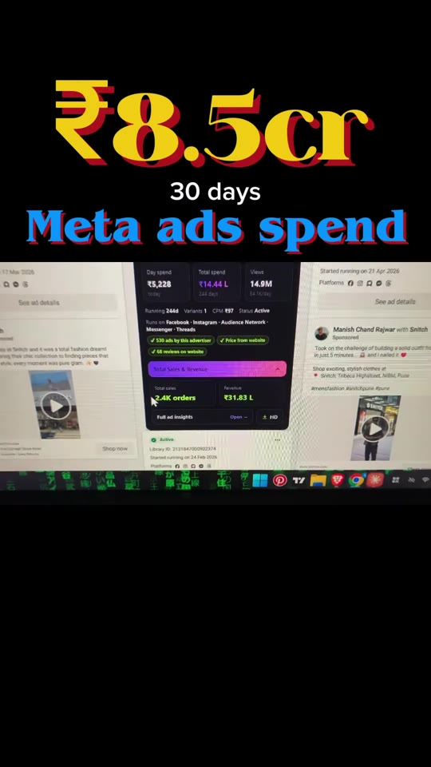
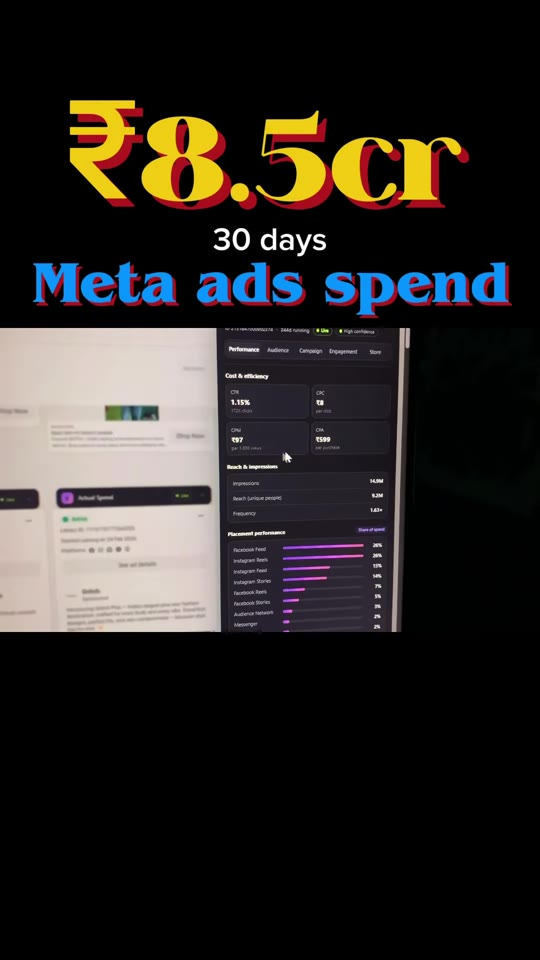

Marketing · Competitor-Research
Unlocking Competitor Meta Ad Spend & Revenue via the Spendo Chrome Extension
While Meta Ads Library natively conceals campaign spend, orders, and targeting parameters, third-party intelligence extensions like Spendo inject estimated telemetry directly into the Ads Library interface. This enables performance marketers to reverse-engineer competitor budgets (e.g. Snitch spending ₹8.5 Cr across 530 ads to generate ₹30 Cr monthly sales), individual ad daily burn rates, placement allocations, and regional demographic distributions.

Steps / Workflow
- Install the Spendo Extension:
- Open Chrome Web Store.
- Search for
spendo. - Select Spendo — Ad Spend & Sales Insights.
- Click Add to Chrome → confirm permissions to install.
- Navigate to Meta Ads Library: Visit facebook.com/ads/library and search for any target competitor brand (e.g.
Snitchorsnitch.co.in). - Analyze Injected Macro Metrics:
- Total 30-Day Spend: Review aggregate ad investment (e.g. ₹8.5 Cr / 30 days across 530 active ads).
- Estimated Monthly GMV: Examine modeled top-line sales generated from paid traffic (e.g. ₹30 Cr/month).
- Drill Down into Granular Ad-Level Telemetry:
- Spend Breakdown: View Day Spend (e.g. ₹15,228/day) and Lifetime Cumulative Spend per creative.
- Efficiency Metrics: Estimated CPC, CPM, CTR, and CPA per purchase.
- Placement Mix: Relative distribution between Instagram Reels, Instagram Feed, Facebook Feed, and Stories.
- Audience Profiling: Age distribution (25–34 vs. 35–44), gender splits, top geographic states (e.g., Karnataka, Maharashtra, UP), and Advantage+ campaign configurations.
Extension Interface Walkthrough


Verbatim Breakdown
| Timestamp | Screen / Source | Verbatim Content |
|---|---|---|
00:00 |
On-screen card | ₹8.5cr 30 days Meta ads spend |
00:01 |
Spoken (audio) | “Snitch fashion brand ka pichle 30 dinon ka Meta ads spend amount 8.5 crore hai. Ye kul 530 ads run kar rahe hain. Ye brand har din sirf har ek ad par 5000 to 6000 ki range me spend karta hai. Sirf per month me ye brand 30 crore ki sales generate karta hai.” |
00:11 |
Injected UI overlay | Actual Spend • SPEND OVERVIEW Day spend: ₹15,228 • Total spend: ₹114.64 L • Total reach: 54.8M Running: 334 d • Total ads: 1 • Active: 1 Tracks on: Facebook, Instagram, Audience Network, Messenger, Threads |
00:20 |
Injected UI overlay | Total orders: 2.4K orders • Total sales: ₹1.63 L Full ad insights > Cost & Efficiency: CPC, CPM, CTR, CPA |
00:22 |
Injected UI overlay | Placement performance: Instagram Reels: 35% • Facebook Feed: 28% • Instagram Feed: 17% • Stories: 12% Audience • Age: 18-24 (42%), 25-34 (46%) • Gender: 92% Male • Top states: Karnataka, Maharashtra, UP, Gujarat, Delhi |
00:32 |
On-screen step | 1: open chrome webstore |
00:35 |
On-screen step | 2: search “spendo” |
00:39 |
On-screen step | 3: click add to chrome button |
00:43 |
On-screen step | 4: extension installed • Read caption 👇 |
(caption) |
Post Caption | 1: open chrome webstore 2: search “spendo” and select 3: click add to chrome button 4: extension installed |
Tools & Extensions
- Spendo — Ad Spend & Sales Insights: Chrome extension designed for direct overlay on Meta Ads Library pages.
- Meta Ads Library: https://www.facebook.com/ads/library/ — Official Facebook advertising database.
Try This
- Install the Spendo extension from Chrome Web Store.
- Navigate to Meta Ads Library and enter the brand name of your largest direct competitor.
- Identify the specific ads that have been actively running for >90 days with consistent daily spend (long-running ads are almost always profitable).
- Analyze their placement distribution and audience age split to evaluate where their highest ROAS conversions originate.
Open Questions
- Data accuracy & modeling limitations: Meta does not expose proprietary ad spend, CTR, or order numbers via public APIs for non-political commercial ads. Extensions like Spendo estimate spend and revenue based on scraped impression buckets, benchmark CPM/CTR models, and external tracking panels; metrics should be interpreted as directional benchmarks rather than GAAP financial accounting.